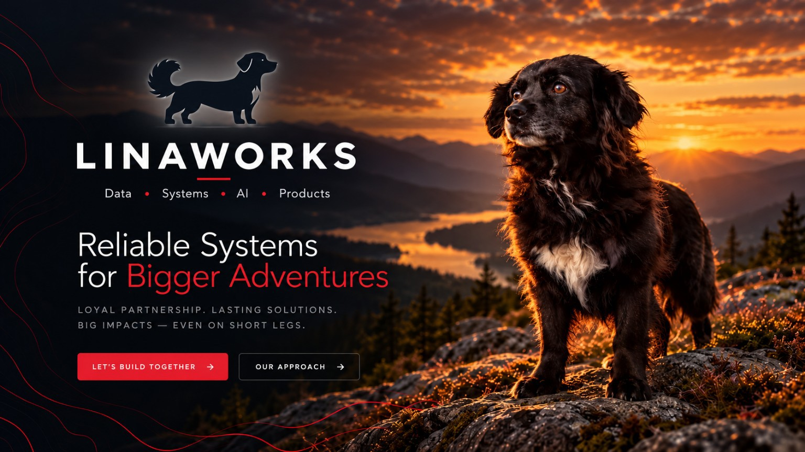
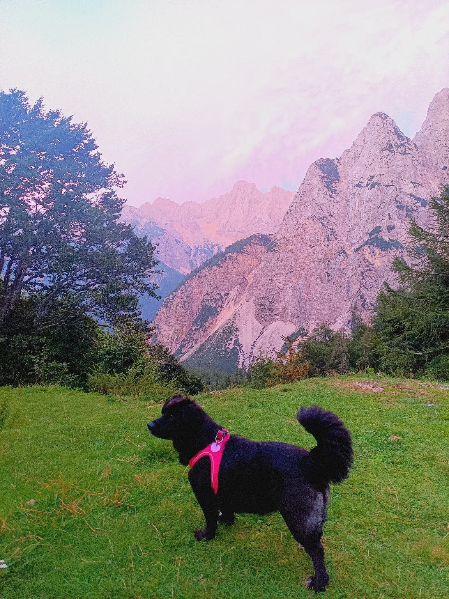
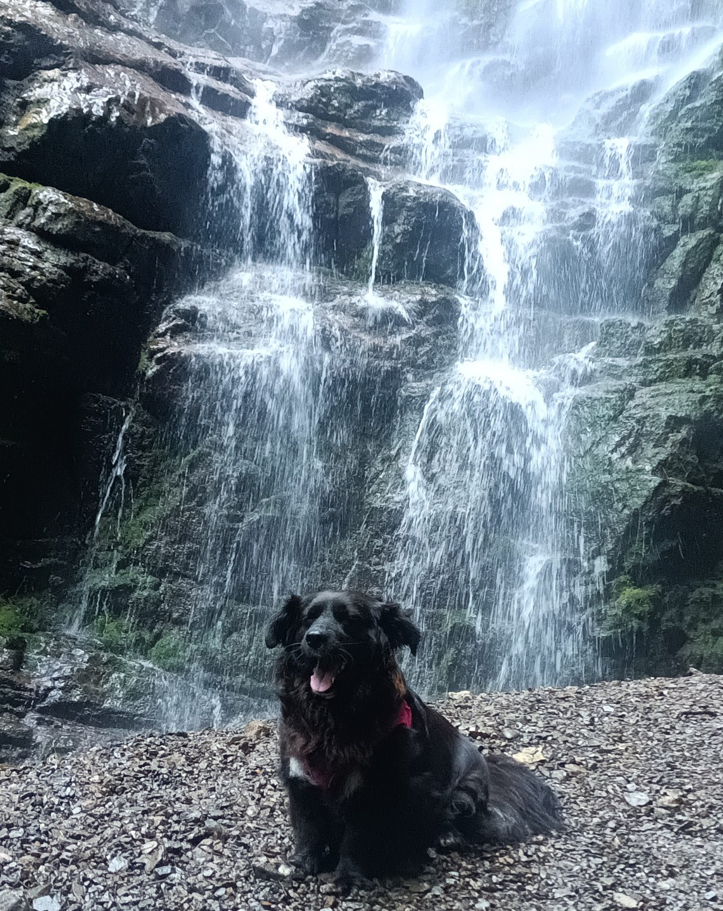

LINAWORKS / DATA & DIGITAL STUDIO
Clear data.
Reliable systems.
Room to go further.
I turn operational complexity into useful reporting,
connected workflows and practical digital products.

01 / THE EXPERTISE
Better decisions.
Less friction.
Business understanding meets hands-on engineering.
From the first question to a working solution.
Data &
reporting.
See performance clearly. Connect spreadsheets, automate recurring reports and turn data into decisions.
Power BI · Tableau · Excel · Google Sheets ↗02CRM &
automation.
Bring your workflows, business rules and data together in tools built around the way your team works.
Salesforce · LWC · Apex · Google Apps Script ↗03Practical
AI consulting.
Find a useful opportunity, build a focused pilot and measure the outcome before expanding.
Agentforce · AI assistants · Integrations ↗
FROM EXPERIENCE TO INSIGHT
Make the numbers
useful.
Workload, quality, team performance and staffing. Reporting designed around the decisions an operations team actually makes.
Explore reporting ↗Portfolio dashboards use fictional data.02 / SELECTED WORK
Products I built.
Three distinct products.
From community workflows to work in the field.

A community, connected.
Public content and role-based tools for club operations.


Your data. In the field.
A custom app for maps, records, terrain and navigation.
self-awareness.

Your day, in context.
Personal check-ins meet local signals.

GOOD COMPANY. EVERY STEP.THE NAME BEHIND THE WORK
Meet Lina.
Always along
for the journey.
LinaWorks is named after Lina — my bright, good-natured companion on mountain trails and in everyday life.
Short legs, a big heart and an unhurried determination to keep going. She has joined me on mountain trails and everyday adventures. Her silhouette brings that personal story into the work.
Darko Jeras · The person behind LinaWorks ↗
On the trail, together.
03 / BEHIND LINAWORKS
Business context.
Hands-on delivery.
Darko Jeras · Zagreb, Croatia
More than five years leading customer service teams, followed by hands-on work in analytics, reporting and automation. I understand the handoffs, spreadsheets and everyday friction behind the numbers — and build tools around those real needs.
Start with a reporting review, one workflow to automate, or a practical AI pilot. Define the scope, build a useful first version and review the outcome.
See how I work ↗